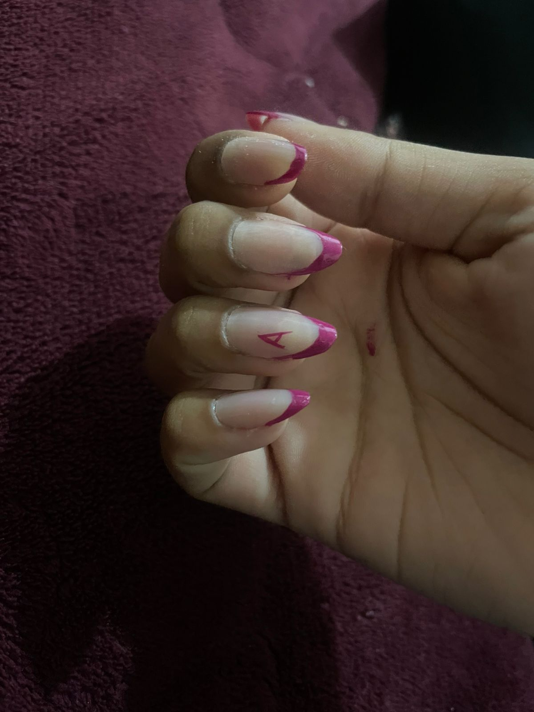

SOBRE MIM

Olá!
Meu nome é Raquel. Sou uma nail designer de 14 anos e moro em Embu das Artes. Trabalho com diversas técnicas e estilos de unhas, sendo especializada no molde F1 e no banho de gel — métodos que garantem naturalidade e resistência às unhas de quem os utiliza..
Como Tudo Começou
Desde a minha infancia, eu tenho uma grande paixão pelo ramo da estetica, sempre procurando ver a beleza em todos, desde ps minimos detalhes pois assim como as unhas, todos tem uma beleza a ser lapidada.
Comecei meus trabalhos em agosto de 2025, após uma decisão de investir em um talento e sonho meu, vendo as unhas que eu fazia em mim mesma e vi que tinha potencial
